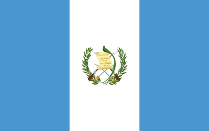
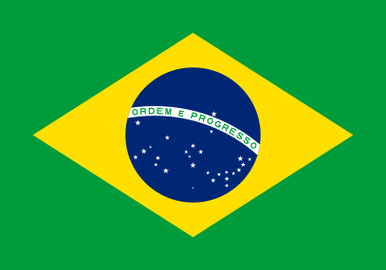
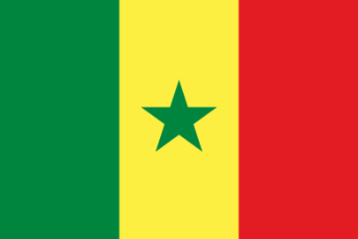

For every transaction you make using fiat, there's an opportunity to start onboarding more bitcoiners.
You can help the local business you already love and support to adopt a better savings and payments network.
You'll benefit by creating a bitcoin economy for your daily needs, and the merchant will have the security of a superior asset in their balance sheet.
Be patient, friendly, and recognize that a lot of merchants are not ready for the switch yet, but we have to start somewhere.
Edit and make it your own
- Edit the Figma project and download both sides
- Merge both PDFs
- Print 2 sides (duplex) on the long side.
- Fold in 3 using the lines on the front
- Trim excess for a more refined look (optional)
Download print ready PDF
| Language | Country | Wallet | |
|---|---|---|---|
| English | Muun | Download | |
| English | Bluewallet | Download | |
| English |  |
Muun | Download |
| English | |
Bluewallet | Download |
| English | Muun | Download | |
| Franch | Muun | Download | |
| Franch | WoS | Download | |
| German | Muun | Download | |
| Italian | Muun | Download | |
| Spanish |  | Bitcoin Beach | Download |
| Dutch | Muun | Download | |
| English | Bluewallet | Download | |
| Slovak | Phoenix | Download | |
| Greek | Muun | Download | |
| Slovak | Phoenix | Download | |
| Czech | Phoenix | Download | |
| Português |  | Muun | Download |
| French |  | n/a | Download |
| Spanish | Muun | Download | |
| Português | Muun | Download | |
| Português | Bluewallet | Download |
Join the campaign
Don't just wait for adoption, go forth and spread it.
On prépare quelque chose dans une petite commune près de #Liège #Bitcoin pic.twitter.com/RA7Kh4noaC
— OsyGeni (@OsyGeni) June 25, 2022
Nosotros también. Mire estos hermosos folletos que imprimimos para ayudar a las empresas locales a comprender cómo y por qué deberían aceptar bitcoins como pago. Contenido proporcionado por #BitcoinForLocalBusiness.com #HarlemBitcoin pic.twitter.com/9jtljCrly1
— Harlem ₿itcoin (@HarlemBitcoin) June 14, 2022
Big shout out to @graphictechcorp for printing our brochures. Content provided by #bitcoinforlocalbusiness.com pic.twitter.com/yL1eb6uoFM
— Harlem ₿itcoin (@HarlemBitcoin) June 14, 2022
What an amazing few weeks it has been!
— Bitcoin Surrey 🚀⚡️ (@BitcoinSurrey) June 13, 2022
We've been quiet on the Twitter front, but busy behind the scenes, with more to come.
Here follows a few Tweets rounding up some of what we and others in the #Bitcoin and #Lightning space have been up to so far ... pic.twitter.com/S9KpIP9Ogo
We just made this free Info Flyer for visitors of our #Bitcoin Info Point.🤩#Bitcoin explained on 1 Page! 🔥
— Hotel Princess Plochingen / No 1 Bitcoin Hotel (@PrincessPlo) June 12, 2022
We forked it from https://t.co/XapOmONmsp @EuropeanBTC21 pic.twitter.com/vA74GSWJfI
Let's spread to local merchants all the magic and advantages of accepting #bitcoin on payments. Just printed some papers from https://t.co/DpcxOfYt48 in portuguese (a lot of translations available). pic.twitter.com/8l0o9rsOPi
— Diogo Lino 🇵🇹 (@DiogoLinoPT) June 11, 2022
A massive S/O to @pedromvpg for the template & to @figma for making it so easy to edit properly 🙏🏾
— OKIN ⚡️ 🏰 (@OKIN_17) June 11, 2022
*this is just a prototype #BitcoinForLocalBusinesses pic.twitter.com/pDBTO5mfBc
Eu acredito nas pessoas, e o #Bitcoin devolve o poder a elas.
— tULIO (@tulio_rn) June 8, 2022
Isso é uma boa introdução. pic.twitter.com/WnwdTQLHp4
First we take the farmers market 👨🌾
— Pedro 🧨 (@pedromvpg) June 8, 2022
Then we take the world 🌍
Show up, smile, and spread #bitcoin in your local community.https://t.co/XHNLw3dpb0 pic.twitter.com/duCeWbQqs5
Paying in sats was simple - scan and go.
— Sidd - #BitcoinTour Harley Rider (@CaptainSiddh) June 6, 2022
I also ran in to @elderndiablito, who talks to vendors about Bitcoin every Sunday while he's grocery shopping. We all have him to thank for Shane (and several other vendors!) accepting bitcoin and starting to look more deeply at it. pic.twitter.com/b1S2qDnIZv
Ze gaan nu op de post! Ben alweer door m’n postzegels heen.. 🔥🧡 https://t.co/LrXMZ7hUhC pic.twitter.com/U8dxG0CN5u
— Brrrrrinkie Noderunner (@onthebrinkie) June 9, 2022
Got the flyers printed out. Now to hand them to all my local businesses i use and help them get off fiat! pic.twitter.com/KJZzynMzAK
— TK☣️Ph.Ple₿ (@ToxiKat27) June 7, 2022
Got the Dutch version right here!
— GHOST of WARTIME Limburg3rt (@GhostLimburg3rt) June 8, 2022
I have been handing them out at the Pentecost fair last Monday with @BitcoinBrabant, @BloemBitcoin, @BdGBertdeGroot, @MarnixCroes , @onthebrinkie, @dabloem & @GrauweDakGans.
It was an awesome day full of some hardcore orange pilling 🔥🧡 pic.twitter.com/FAIccI2QEv
It was a great day! 🙏 all for the support. @SeedMint21 @CryptoCloaks @BloemBitcoin @slush_pool @onthebrinkie @einzie @FOUNDATIONdvcs pic.twitter.com/5bJqf0gdxv
— Bitcoin Brabant (@BitcoinBrabant) June 5, 2022
Help your local businesses start accepting #Bitcoin! https://t.co/1bpME8Y7k9
— European Bitcoiners (@EuropeanBTC21) June 3, 2022
Create, edit, share and teach !⚡️
Make it your own, many languages already exist on the website, you can add more or even customize as per your liking.
Bitcoinize your neighbourhood,town, city etc pic.twitter.com/y1h195ukBz
In unserem #Bitcoin Info Point gibt es kostenfreies #BTC Wissen,infomaterial & einen ATM.
— Hotel Princess Plochingen (@PrincessPlo) June 2, 2022
Der Raum ist komplett in Orange gestrichen🔥🔥🔥
Es gibt kostenlose Sticker und vieles mehr🤩
Habt ihr Ideen was noch fehlt ? pic.twitter.com/jbD1B6jXmp
We've created a "Bitcoin for Businesses Brochure" specific to the @BitcoinBeach Wallet. Feel free to download and print for your purposes! #Bitcoin #Guatemala #Bitcoinlake
— Bitcoin Lake - Official 🇬🇹🍊💊⚡️ (@LakeBitcoin) May 27, 2022
Thanks to @fabu69420 for his input on this!@GaloyMoney 👀👀https://t.co/0BVnDcAfjm
Having great success down here at The Yards in Kettering.
— Si⚡️ (@HodlSolo) May 27, 2022
Burger Mania is now setup and Accepting #Bitcoin. Paid for my lunch in sats.
Illicit Skate also accepting.
Going to turn this place into a Bitcoin hub.
Watch this space. pic.twitter.com/KXLe9LE0ZJ
bought steak, eggs & sausages with sats today. Call to action for Chicago bitcoiners: go to the Logan Square Farmers market, shake hands, spend some sats and support our local producers. #ProofofWork @MartyBent @chibitdevs @Chris_Stewart_5 @BOBmeetupCHI pic.twitter.com/4nHazU8Mj1
— dernjacat (@elderndiablito) May 22, 2022
Instant conversion.
— Pedro 🧨 (@pedromvpg) May 20, 2022
Settled with #bitcoin. pic.twitter.com/wDBpO0eII7
At the belly of the beast.
— Pedro 🧨 (@pedromvpg) May 20, 2022
BITCOIN X NYC pic.twitter.com/5Wr4TzeAQy
Look out local businesses. Orange pills incoming! pic.twitter.com/pyVdEw5Pjq
— Asheville Bitcoiners🌱💊 (@AVLbitcoiners) May 18, 2022
h/t @EuropeanBTC21 @pedromvpg
— Gigi ⚡🧡 (@dergigi) May 15, 2022
👉 https://t.co/X9vWY6ahWG
👉 https://t.co/uUFsnbhuzG pic.twitter.com/CpYq1ei13T
Scaling up https://t.co/XHNLw3dpb0 pic.twitter.com/gWb1apR65v
— Pedro 🧨 (@pedromvpg) May 13, 2022
Working through some card ideas (will be similar after few mods)@pedromvpg brochure has right amount of space for card pic.twitter.com/fev5ODkZCv
— TopekaBitcoin (@TopekaBitcoin) May 13, 2022
GO OUT AND TALK ABOUT #BITCOIN IN YOUR COMMUNITY.
— Gary of House Krause (@GaryRKrause1) May 12, 2022
Went to a local event last night to talk about bitcoin. Handed out business cards and Bitcoin For Local Business pamphlets and received the following email this morning…
Bout to go shake some local farmers’ hands 🌽🤝💯
— dernjacat (@elderndiablito) May 8, 2022
Shout out @pedromvpg @MartyBent @ODELL @beefinitiative pic.twitter.com/T6qF0WDsNc
The Colony Hotel Caesar Salad tastes even better bought with Sats and a side of 🍊💊
— Adam G ⚡️₿ 丰 (@CertaintyShow) May 6, 2022
Thanks to @bitrefill for supporting the Palm Beach #Bitcoin meetup.@80jmbrown @nobsbitcoin
Download your pamphlet today! https://t.co/7GvNQuAGx2 pic.twitter.com/o3tyJkMgaA
Bitcoin for Local Business Initiative Launched
— no bullshit bitcoin (@nobsbitcoin) April 21, 2022
- printable pamphlets to provide to local merchants who are interested in accepting bitcoinhttps://t.co/34wn6FtNCZ pic.twitter.com/BM9sCMl9D2
Já prontos a serem distribuídos por #Peniche!! Orange pilling incoming... pic.twitter.com/QqUg0Qnzed
— Aceita Bitcoin (@aceitabitcoinPT) April 12, 2022
Testing a “Bitcoin for Local Commerce” pamphlet to help farmers at the market understand how to leverage bitcoin for their businesses. pic.twitter.com/aXhUe6Srgk
— Pedro 🧨 (@pedromvpg) March 26, 2022